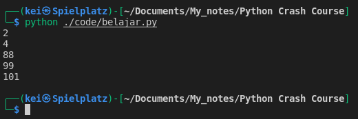

-
I can use For loop and While loop for Iteration. They basically do about the same thing but the preferred method is using a For loop.
-
For loop is typically use when iterating over a sequence of values (like a list or dictionary).
-
Examples of Iteration using For loop:
some_nums = [2, 4, 88, 99, 101]
for num in some_nums:
print(num)

This will get the sum of all the integers value in a list :
num_list = [30, 9, 19, 81, 94, 100, 5, 11, 44]
print(num_list)
sum_num_list = 0
for number in num_list:
sum_num_list = sum_num_list + number
print(sum_num_list)

— So first, I set the sum_num_list to 0, and for number in num_list will run a For loop in the iterable list (num_list), for the first iteration the number will be 0 + 30, then the sum will add 9, and next will add 19 and it will keep adding up according to the element in num_list and the total will be captured in the sum_num_list
- I don’t have to use an iterable list to run a For loop, using the range() function I can generate numbers within certain range
for number in range(15):
print(number)

- I can use range() to print out the the elements of
num_listbased on the index, but the range has to match the elements that are in the list (can’t exceeded)
num_list = [30, 9, 19, 81, 94, 100, 5, 11, 44]
for number in range(9):
print(num_list[number])

num_list = [30, 9, 19, 81, 94, 100, 5, 11, 44]
for number in range(5):
print(num_list[number])
print("\n")
for number in range(10):
print(num_list[number])
- In case I don’t know how many elements are in the
num_listI can still use range() with len() to find out how many elements in the list based on the index or I can just print them out.
num_list = [30, 9, 19, 81, 94, 100, 5, 11, 44]
for num in range(len(num_list)):
print(num)
print("\n")
for num in range(len(num_list)):
print(num_list[num])

- Another way to get the sum of all the integers value in a list using range() with len()
num_list = [30, 9, 19, 81, 94, 100, 5, 11, 44]
print(num_list)
print("\n")
sum_num_list = 0
for number in num_list:
sum_num_list = sum_num_list + number
print(sum_num_list)
print("\n")
sum_num_list = 0
for number in range(len(num_list)):
sum_num_list = sum_num_list + num_list[number]
print(sum_num_list)

-
When I’m incrementing the value of a variable using the existing value, like with
sum_num_list = sum_num_list + numberI can write the short form of it assum_num_list += number -
For example if I don’t know how many times I may run a code, I can get the run time from the input
running = int(input("How many times do you want the code to run? "))
for num in range(running):
print(f"Run: {num}")
- By default the code will run from 0 so I have to add + 1
running = int(input("How many times do you want the code to run? "))
for num in range(running):
print(f"Run: {num + 1}")
- To print out the items (both keys and values) in a dictionary I can use the items() method. If I don’t use items() method it will only print out the keys.
- The
itemin the dictionary will be returned as tuple.
lang_dict = {"py":"python", "js":"javascript", "jl":"julia", "rs":"rust"}
# not using .items()
for item in lang_dict:
print(item)
print('\n')
for item in lang_dict.items():
print(item)
- Since
itemis returned as a tuple, I can unpack it
lang_dict = {"py":"python", "js":"javascript", "jl":"julia", "rs":"rust"}
for item in lang_dict.items():
key, value = item
print(f"For the key {key}, the value is {value}")

- Instead of using
itemvariable to later unpack it tokeyandvalueI can just unpack it directly tokeyandvalue
lang_dict = {"py":"python", "js":"javascript", "jl":"julia", "rs":"rust"}
for key, value in lang_dict.items():
print(f"For the key {key}, the value is {value}")